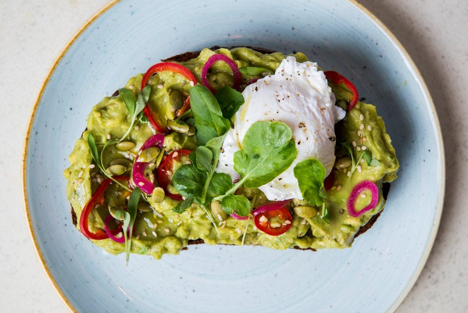

Avacado Toast

Description
Avocado toast, a contemporary culinary sensation, is a simple yet indulgent dish that has taken the breakfast and brunch scene by storm. A slice of hearty, toasted bread serves as the canvas for this creation, adorned with ripe, creamy avocado slices. Mashed or sliced, the avocado is generously spread over the warm toast, creating a velvety, green layer. The dish is often elevated with additional toppings such as a sprinkle of sea salt, a dash of black pepper, red pepper flakes, or a drizzle of olive oil. Some variations may include a poached or fried egg on top, adding a luscious richness to the ensemble. Avocado toast not only delights the taste buds with its harmonious blend of textures and flavors but also boasts a nutritious profile, making it a beloved and Instagram-worthy breakfast choice for health-conscious food enthusiasts.
ingredients
- Bread
- Avocado
- Salt and Pepper
- Olive Oil
- Red Pepper Flakes
- Lemon or Lime Juice
- Poached or Fried Egg
Steps
- Toast slices of your chosen bread to your desired level of crispiness.
- Cut the ripe avocado in half, remove the pit, and scoop the flesh into a bowl. Mash it with a fork or slice it, depending on your preference.
- Season the mashed or sliced avocado with a pinch of salt and a dash of black pepper. Add any additional desired seasonings, such as red pepper flakes for heat.
- Spread the mashed or sliced avocado evenly over the toasted bread.
- Drizzle a small amount of olive oil over the avocado for extra richness. Squeeze a bit of lemon or lime juice to add brightness and prevent browning.
- Add any optional toppings you desire, such as a poached or fried egg for added protein.
- Sprinkle a bit more salt and pepper on top, if needed, to taste.
- Avocado toast is best enjoyed fresh and warm. Serve it immediately and savor the delightful combination of creamy avocado and crispy toast.